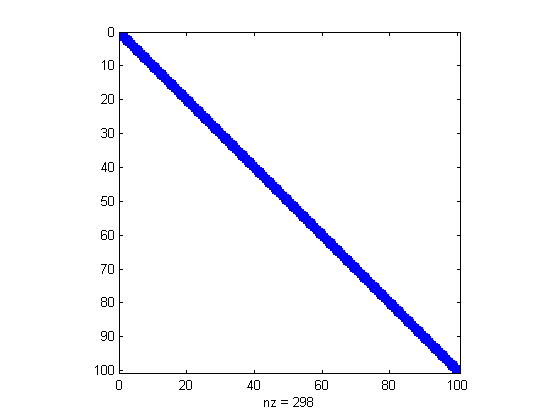

WHAT WE DID ON MARCH 14
Approximately, I mean ...
Contents
Example of a large sparse matrix
We define a NxN sparse matrix, with 4 in the diagonal, -2 in the upper diagonal and -1 in the lower diagonal
N=100; A=sparse([1:N 1:N-1 2:N], [1:N 2:N 1:N-1],... [4*ones(1,N) -2*ones(1,N-1) -1*ones(1,N-1)],N,N); spy(A) B=full(A); % filled with zeros whos A B % storage needed for A and B
Name Size Bytes Class Attributes A 100x100 5576 double sparse B 100x100 80000 double
Example of a linear operator
This example continues the previous one. The operator D is equivalent to multiplication by A, but it is independent of the size N
D = @(x) 4*x-2*[x(2:end);0]-[0;x(1:end-1)]; x=randn(N,1); norm(A*x-D(x))
ans =
3.961178668390469e-015
Example of a matrix free operator
The function MatrixFreePowerMethod is the power method code adapted to work with operators.
MatrixFreePowerMethod(D,randn(10,1),1e-10,1000) % The eigenvalue corresponds to the 10 x 10 version of the matrix A type MatrixFreePowerMethod
ans =
6.713855940010093
function [lnew,x]=MatrixFreePowerMethod(A,x0,tol,itMax)
% [lnew,x]=MatrixFreePowerMethod(A,x0,tol,itMax)
%
% Input:
% A : handle to a matrix-vector multiplication routine
% x0 : column vector with n components
% tol : relative tolerance for stopping criterion
% itMax: maximum number of iterations
% Output:
% lnew : approximate eigenvalue
% x : approximate eigenvector (column vector)
%
% Last modified: March 13, 2014
y=A(x0);
lold=Inf;
for n=1:itMax
x=(1/norm(y))*y;
y=A(x);
lnew=dot(x,y);
if abs(lnew-lold)<tol*abs(lnew)
return
end
lold=lnew;
end
display('Maximum number of iterations reached without convergence');
lnew=[];
x=[];
return